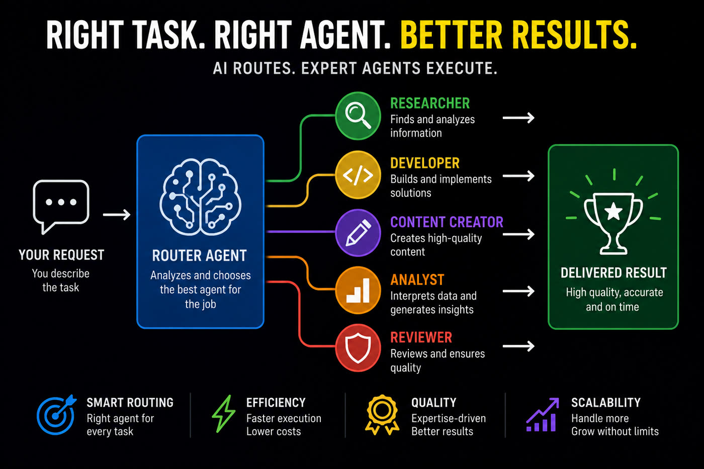
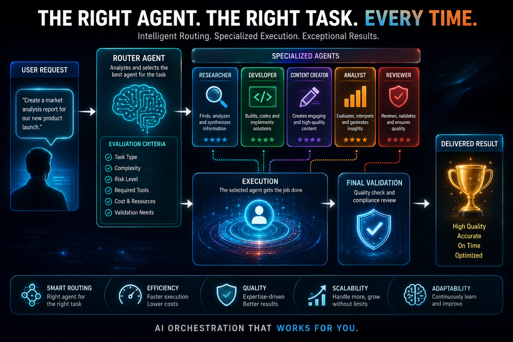

Antes de despachar um subagente ou workflow, o maestro-roteador decide separadamente qual modelo (haiku/sonnet/opus/fable) e quanto esforço (low→max) a tarefa merece — em vez de colapsar tudo em "sonnet+medium".
O maestro-roteador é uma skill de Claude Code: recebe um problema bruto e decide, antes de despachar, qual modelo e qual esforço cada parte do trabalho merece.
Responde uma pergunta só: qual nível de critério o pior passo da tarefa exige? O menor modelo que resolve bem esse passo é o escolhido — nunca "por garantia".
Soma ambiguidade + custo do erro. Solução única e erro barato → low. Vários caminhos plausíveis ou erro caro (produção, dado perdido) → high ou mais.
Quando o risco é de correção, não há opção barata. Quando é só acabamento/gosto, a skill oferece a escolha custo × qualidade e quem decide é o usuário.
A skill roda inline no turno principal — nunca em um subagente — e segue quatro passos fixos antes de despachar qualquer trabalho.
Tarefa mais barata que a própria triagem não recebe triagem. "Corrige esse typo" vai direto no default do turno.
Se você mesmo nomeou um risco de produção/perda na justificativa, o esforço mínimo é high. "Medium com cuidado" não existe.
Erro barato e reversível? Comece no menor esforço plausível e só suba com evidência de resultado insuficiente — nunca "high por garantia". A escada NÃO vale pra risco irreversível.
Quando a estrutura já está garantida por um template/skill e só falta acabamento, a triagem apresenta o par custo×qualidade e deixa o usuário escolher.

O prompt cache é por modelo e depende do prefixo do contexto. Perder o cache de um contexto de 100k tokens torna a próxima entrada ~12,5× mais cara (gravação 1,25× vs. leitura 0,1×). A matriz de triagem precisa respeitar isso.
Trocar o /model do turno principal joga fora o cache acumulado. Faça a troca só em fronteira de trabalho (fim de fase, handoff) — nunca no meio de um bloco. Em contexto grande, a troca pode custar mais que a economia do modelo menor.
Cada Agent/Workflow tem contexto próprio: rotear uma parte pra um modelo menor via subagente NÃO toca o cache principal. É o caminho preferido pra aplicar a matriz sem custo de troca.
Nunca mandar "ainda está aí?" só pra segurar o cache — o Claude Code gerencia o cache sozinho e o ping custa mais do que salva. Pausa longa? Handoff enxuto e deixe expirar.
Trabalhe em blocos contínuos (planejar → executar → testar → documentar), mantenha o começo do contexto estável (não ligar/desligar ferramentas e MCPs no meio do bloco) e concentre tarefas relacionadas na mesma sessão.
Pausa curta: continue normal. Pausa longa ou troca de tarefa: handoff curto (objetivo, estado, decisões, próximo passo) + contexto novo. Na API direta, chamadas espaçadas por 10–50 min pagam o cache de TTL 1h (gravação 2×).
Num teste real com a mesma tarefa em 12 níveis de esforço e 2 providers, os resultados funcionais foram quase idênticos — os níveis altos adicionaram um favicon e sombras, por 2–5× os tokens. O que muda o resultado não é o slider de esforço.
Um prompt que diz exatamente o que "pronto" significa entrega em low o que o esforço max tenta adivinhar. Esforço não compensa especificação vaga.
Ferramentas, arquivos, terminal, skills e instruções — o harness — são os braços do modelo. Investir no harness rende mais que subir esforço.
Em tarefa simples, deliberação em excesso re-explora caminhos já decididos e superdimensiona a solução — o resultado pode sair pior, não só mais caro.

Só isso: Claude Code instalado e a skill disponível em ~/.claude/skills/ (usuário) ou .claude/skills/ (projeto).
CLI com suporte a skills e a chamadas Agent/Workflow com parâmetros model/effort.
# confirma instalação
claude --versionPra clonar o repo e criar o symlink de instalação.
# confirma git
git --versionSem serviço externo, sem chave de API, sem build. É markdown puro lido pelo Claude Code.
# conteúdo da skill
skills/maestro-roteador/SKILL.mdInstalação por symlink (pra receber atualizações do repo automaticamente) e três formas de acionar a triagem.
Baixa a skill.
git clone https://github.com/inematds/maestro-roteador.git
Fica disponível em qualquer projeto e recebe atualizações do repo sem reinstalar.
ln -sfn "$(pwd)/maestro-roteador/skills/maestro-roteador" ~/.claude/skills/maestro-roteador # symlink de usuário
Sem symlink, direto na pasta de skills do projeto (não recebe atualizações automáticas).
cp -r maestro-roteador/skills/maestro-roteador .claude/skills/ # skill só deste projeto
Frases-gatilho: "qual modelo", "quanto esforço", "faz a triagem disso".
"Faz a triagem disso: renomear 80 arquivos em lote seguindo um padrão." # -> haiku + low
Ao despachar subagentes/workflows, a skill aplica a matriz sozinha e distribui cada parte com model e effort corretos — sem você precisar pedir a triagem à parte.
"Migra esses dados de produção pro schema novo." # -> sonnet + high (risco nomeado)
A saída sempre vem no mesmo formato YAML, com o pior passo e o risco explicitados por parte.
tarefa: <resumo> partes: - o_que: <subtarefa> pior_passo: <qual e por quê> modelo: haiku|sonnet|opus|fable esforco: low|medium|high|xhigh|max risco: <custo do erro em 1 linha> turno_principal: <recomendação de /model, se valer trocar>
A skill foi escrita contra um baseline medido: sem ela, agentes colapsam qualquer tarefa em "sonnet + medium". Com ela, os três cenários de teste foram pro canto certo da matriz.
| Cenário | Sem skill | Com skill |
|---|---|---|
| Renomear 80 arquivos em lote | sonnet + medium | haiku + low |
| Roteiro com voz de marca | sonnet + medium | fable + low |
| Migração de dados com produção em risco | sonnet + medium | sonnet + high |
O meio-termo genérico "sonnet+medium pra tudo" paga demais em tarefas mecânicas e de menos em tarefas com risco real — os três cenários mostram os dois erros ao mesmo tempo.
Rode "sem skill" (desative-a) e "com skill" no mesmo pedido bruto e compare o modelo/esforço escolhido — é exatamente o teste que validou os três cenários acima.
Projeto de pesquisa/educação INEMA — sem roadmap formal de features; o que existe hoje e o limite documentado da skill.